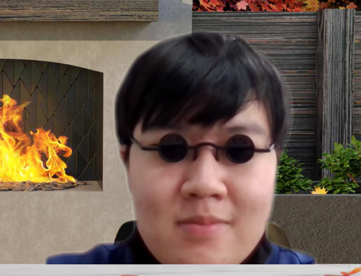

닥터 스트레인지: 대혼돈의 멀티버스
닥터 스트레인지: 대혼돈의 멀티버스
성찰교실
성찰교실
성찰교실
성찰교실
성찰교실
| head |
body
html |
97.9% |
| 97.9% |
| 네트워크 수행 점수 |
평균 |
| 1반 |
1차 점수 |
17 |
17 |
| 2차 점수 |
17 |
| 2반 |
1차 점수 |
16 |
17.5 |
| 2차 점수 |
19 |
| 3반 |
1차 점수 |
20 |
19.25 |
| 2차 점수 |
18.5 |
| 4반 |
1차 점수 |
20 |
20 |
| 2차 점수 |
20 |
- 목록1
- 목록2
- 목록3
야 궁금하지? 들어와봐 ㅋㅋ



스파이더맨: 노 웨이 홈 두번째 쿠키 영상에서 선행 공개된 후[10], 12월 23일 공식으로 공개되었다.
호러 영화로 나온다고 알려졌으나 완전한 호러 영화로 나올 것인지,
아니면 부분적으로 호러적인 요소를 차용하는 정도에 그칠 것인지에
대한 의견이 분분한 상태인데,
일단 티저 예고편만 놓고보면 일반적인 호러 영화와는 거리가 있으나[11][12] 분위기 자체는 전작과 비교하면
매우 어둡고 음산한 느낌이다.
사실 샘 레이미 감독은 이미 예전부터 이블 데드 시리즈[13] 를 비롯한 호러 영화들의 감독을 맡아온 전적이
있기에 의외라고 할 것도 없거니와, 스파이더맨 2 속 닥터 옥토퍼스 수술씬에서 히어로 무비답지 않은 호러틱한 연출을 선보인 바가 있다.
티저 영상과 포스터, 완구 등으로 보면 다른 멀티버스의 닥터 스트레인지도 등장한다.
예고편에서는 다른 멀티버스의 인물로 추정되는 어두운
분위기의 닥터 스트레인지가 등장했고 완구로 디펜더스 소속의 닥터 스트레인지,
통칭 '디펜더 스트레인지'가 유출되었다. 티저 영상에서
마블 로고가 뜨기 전, 누군가 미지의 공간에 빨려 들어가는 장면에 등장하는 인물이 디펜더 스트레인지로 추정[14] 되고 있다.
2월 14일, 슈퍼볼에 맞춰서 티저 예고편이 공개되었다. 상단의 영상 외에도 슈퍼볼 TV 스팟에서만 추가된 장면들도 있다.
프로페서 X와 캡틴 마블인 마리아 램보 혹은 슈퍼리어 아이언맨으로 추정되는 인물이 등장한다.
이전작들과 달리 닥터가 아가모토의 눈을 착용하는 위치가 만화처럼 망토 사이 부착되었으며 공중부양 망토의 뒤쪽에도 푸른색 방패문양이 생겼다.